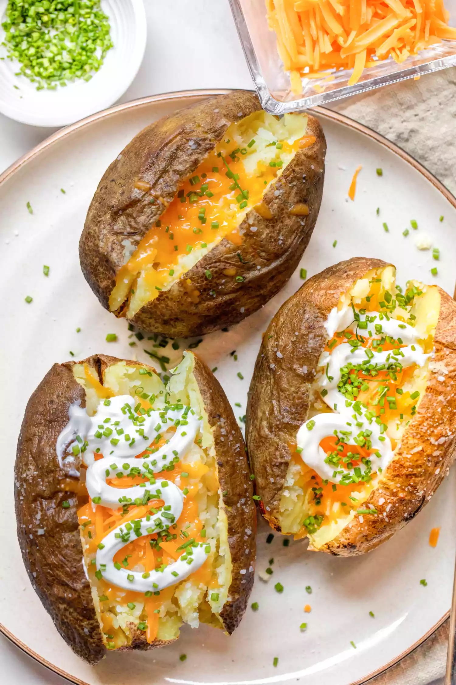

Microwave Baked Potato

Description
Microwave Baked Potato
Ingredients
- 1 large (10 to 12-ounce) russet potato
- 1 teaspoon olive oil, optional
- Pinch of kosher salt, optional
Steps:
- Prepare to potato
- Microwave the potato
- Crisp the skin
- Serve the potato
Source: https://www.simplyrecipes.com/microwave-baked-potato-recipe-6931347
Back